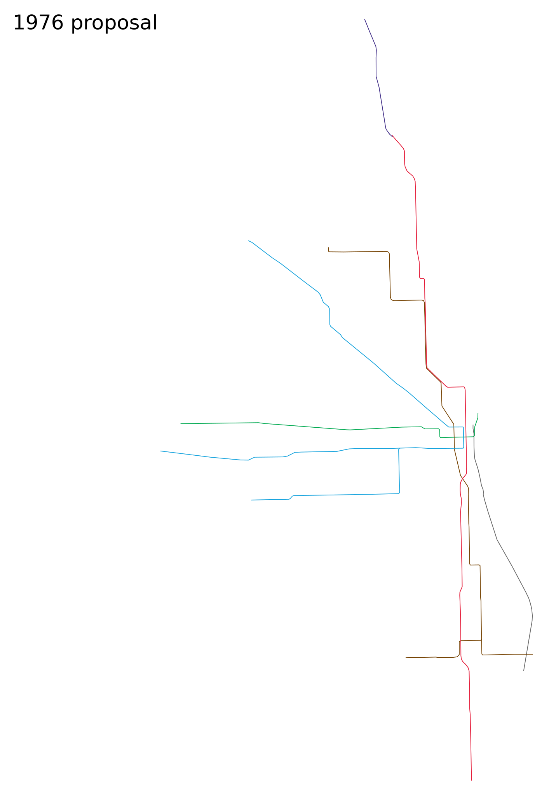
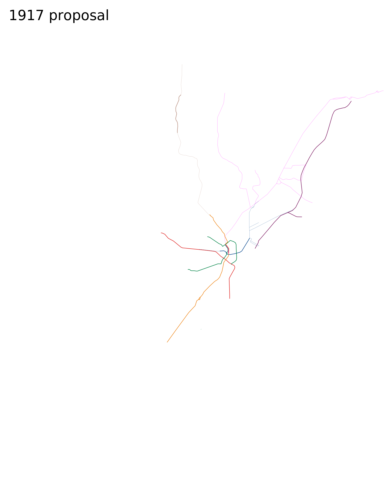
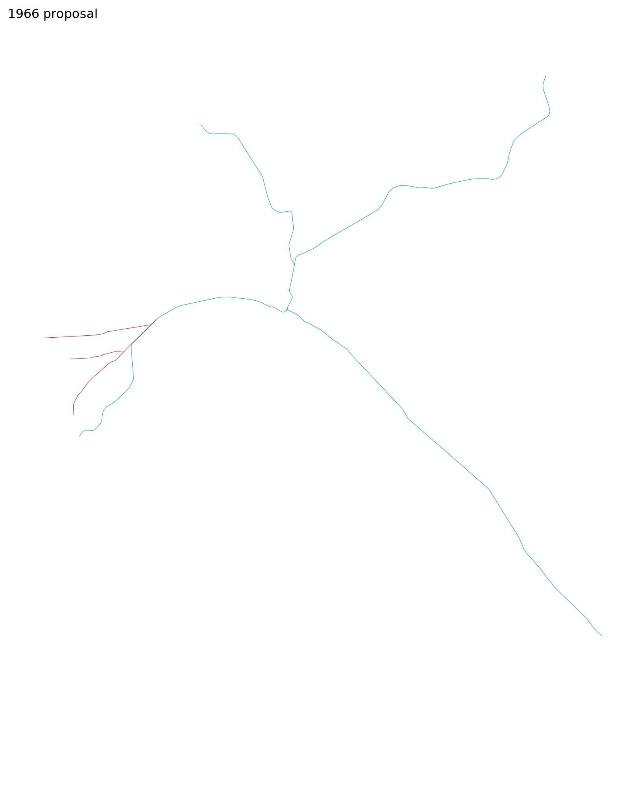

Unrealized Rapid Transit Plans
New York 1891 proposalGould Request to Transit Commission

more info New York 1939 proposal
IND Second System

more info New York 1968 proposal
MTA Program for Action

more info New York 2008 proposal
Sander congestion pricing vision

more info Chicago 1976 proposal
CUTD Plan

more info Boston 1917 proposal
Beeler Report

more info Boston 1945 proposal
Coolidge Commission

more info San Francisco 1966 proposal
Muni Modernization Scheme

more info New Orleans 1959 proposal
Monorail of Louisiana
more info
Based on planned frequent midday service (notes).
Scale: = 10 km (30 CSS pixels per km)
Please send any corrections or questions to threestationsquare at gmail dot com.
See also: rapid transit timelines - miscellaneous timelines and maps